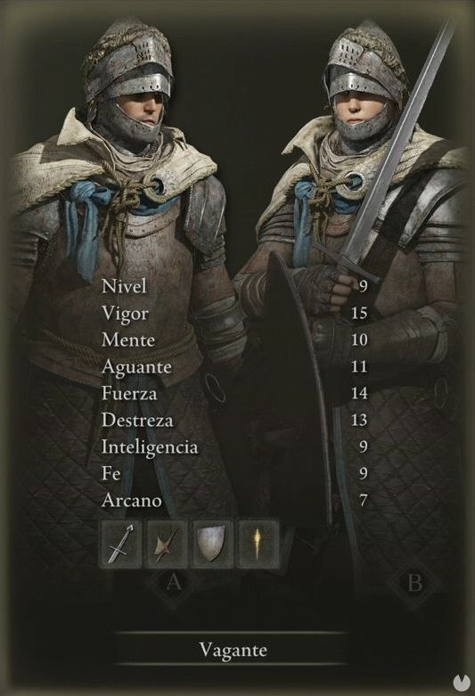
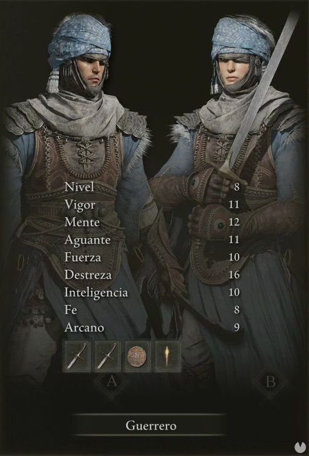
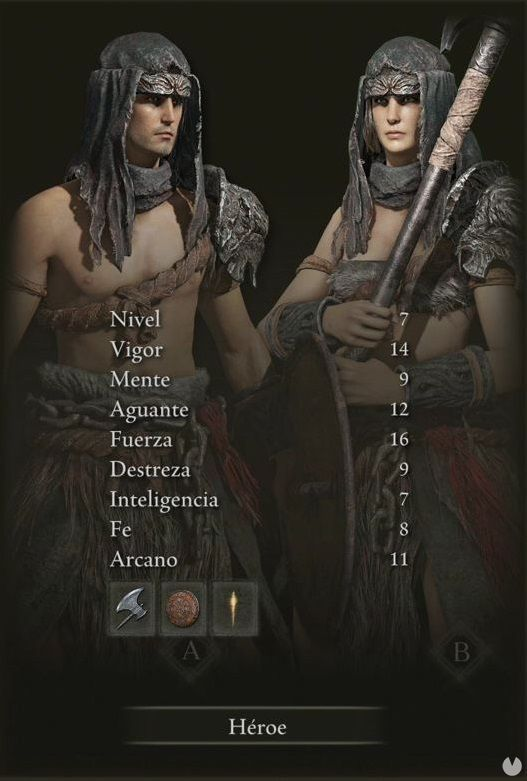
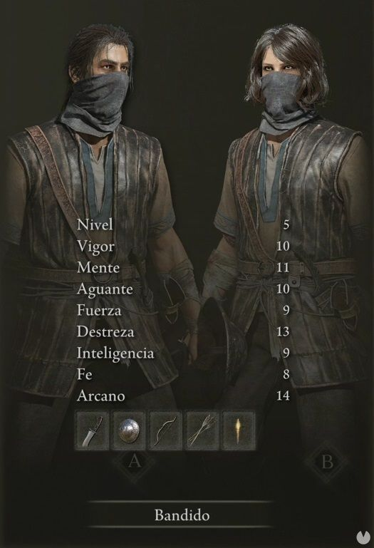

Vagante
El Vagante es, básicamente, un caballero. Cuenta con una armadura decente y el mayor nivel de Vigor (vida) de inicio. Comenzará con una espada larga, una alabarda y un escudo.

Guerrero
El Guerrero se presenta como un pícaro o rogue. Comienza su aventura con el nivel de Destreza de todos, lo que le permite empuñar fácilmente una Cimitarra en cada mano, haciendo mucho daño rápidamente al coste de no contar con mucha protección.

Héroe
El Héroe es el bárbaro. Ofrece el mayor nivel de Fuerza de todas las clases iniciales y tiene un hacha. Solamente le falta un garrote para dejar claro lo bárbaro que es.

Bandido
En el Bandido vemos otro pícaro. No está tan especializado como el Guerero, pero su principal ventaja es que comenzará con un arco. Y eso en un Souls es una gran ventaja.
